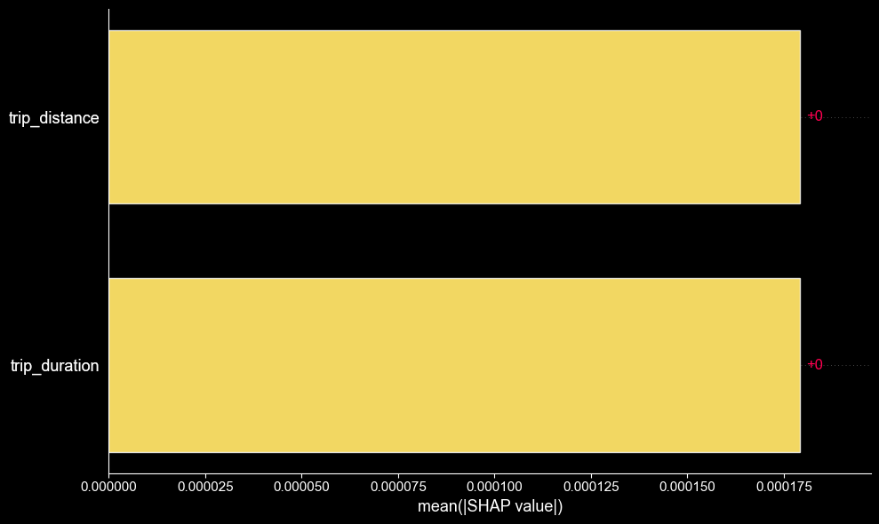
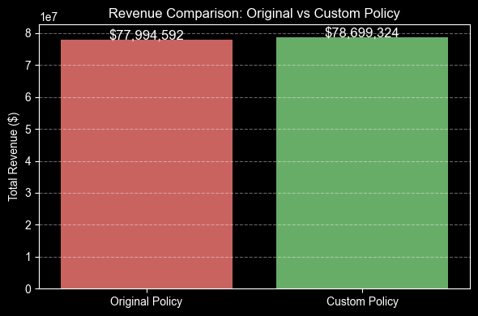

Problem
The $2.50 NYC congestion surcharge lacked consistency across time, zones, and trip distance. This led to inefficiencies in fairness (over-concentration in low-income zones) and operational clarity (unclear triggers), creating complex problems from a simple policy.
Action
- Data-Driven Policy Analysis: Built classification models (Logistic Regression, RandomForest) to predict surcharge triggers (ROC-AUC 0.91) using 3M+ taxi trips; utilized SHAP for interpretable policy insights.
- Quantifiable Revenue & Equity Modeling: Developed Ridge Regression models to estimate policy impact on fares; prepared groundwork for balanced scenario testing.
- Strategic Scenario Simulation: Designed & executed simulations for alternative policies (peak-hour/zone exceptions); compared revenue & equity outcomes to identify optimal strategies.
- Reusable Framework Design: Modularized simulation/analysis tools into a reusable framework; enabled rapid adaptation for dynamic pricing, urban logistics, & smart city policy.

Figure 01: SHAP Feature Importance for Surcharge Prediction (Classifier Model)
Result
- Tangible Revenue Growth: Achieved +0.9% total revenue gain through data-driven, optimized time/zone pricing.
- Enhanced Policy Equity: Significantly reduced surcharge overconcentration in underserved areas, leading to fairer cost distribution.
- Actionable Operational Insight: Provided interpretable SHAP outputs clarifying complex surcharge triggers; enabled informed cross-functional policy/operations decisions.
- Scalable Strategic Tool: Delivered a reusable framework transforming raw data into actionable policy proposals; foundation for broader smart city initiatives.

Figure 02: Modeled Revenue Trend: Before vs. After Optimization
Code & Report
📍 Detailed notebook:
HERE
📍 Presentation (PDF):
HERE
📌 Data: NYC TLC Yellow Taxi Trip Records, Zone Lookup